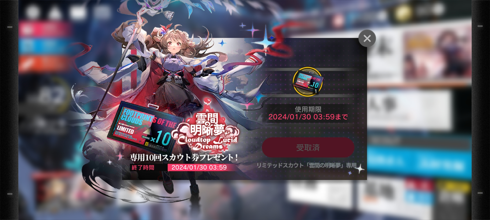

ゲーム性
まずはアークナイツのゲーム性について紹介します。
アークナイツの魅力はまずそのゲーム性の面白さでしょう
アークナイツは「タワーディフェンスゲーム」と言われるジャンルで、簡単に言うと、「攻めてくる敵を防衛したら勝ち」といったゲーム性になっています。

「赤い枠」から敵が出現し、「青い枠」に入ったら負け
プレイヤーは「ドクター」と言われる指揮官となり、キャラクター達（オペレーター）をマスに配置していき、防衛していきます。
オペレーター達は、「地上」「高台」この２種類のマスに配置していくことになります。基本的には、「地上＝前衛キャラクター」「高台＝遠距離キャラクター」を配置して、敵を殲滅していきます。
基本操作は以上となるので、まずは簡単に遊ぶことができます。
あ、どうせ最高レアがいたらこんなステージ簡単だろと思ったそこの人―――
甘いです!!
このゲームの面白さの真髄は何といっても、低レアと最高レアの活用方法が多岐にわたることでしょう
「コスト」、というものがこのゲームには存在しており、それぞれキャラクターはそのコストを消費して配置していくことになります。
当然、最高レアのコスト消費は重いです。私もプレイ当初、なんの考えなしに最高レアで編成を固め、コストが間に合わず何回も失敗しました。
そこで、コスト消費が軽い低レア達の出番というわけです。
勿論、各ステージごと、各イベントごとに様々なギミックが張り巡らされています。
それをどういった編成で攻略するかを考える、これがこのゲームの楽しみ方だと思います。
ガチャ
次はガチャについて紹介したいと思います。
先程語ったように、各ステージの絶妙なバランス調整のおかげで強キャラが複数名いなくてもクリアできることから、ガチャでレアリティーの高いキャラを引かなくてもゲームを楽しむことができます。
そして、アークナイツは対人戦ゲームではないため、誰かと競ったり、ランキングという概念が存在しません。
逆にこのステージを突破するにはこのキャラを借りたいといった協力が必要になる場面が多々あります。
とはいえ、ガチャを全く引かなくても強くなれるといったことはありません。
アークナイツの魅力の一つでもある個性的で美麗なキャラクターや自分の戦略の幅を広げるものなどガチャを引くことには沢山のメリットがあります
ここの調整が素晴らしいなと私は感心した記憶があります
そこで、私が思うガチャを引くべきタイミングをここに記したいと思います
まずは何といっても自分の好みのキャラクター、即ち推しキャラを見つけたときでしょう。
アークナイツの育成は中々時間を食います、なので、自分のモチベーション維持にも繋がる推しを引くのがいいタイミングだと思います。
ん？私の推しは？ですか…
そうですねぇ。私の推しはこの子でしょうか
いいですねぇ、一目見た時心にキました。
色々語りたいのですが、語りすぎるといけないのでやめておきますね(笑)
最後に、周年記念のイベントでしょうか

アークナイツは周年のイベント時に無料で限定10連ガチャチケットというものを配布してくれます。
無課金でも限定最高レアのキャラクターが当たるチャンスがあるというわけですね。
ストーリー・世界観
最後に音楽とストーリーについて紹介したいと思います
このゲームはダークストーリーが多めです。
「テラ」という星を舞台に、人々が争いを起こし命を落として行きます。
その原因は「源石（オリジニウム）」と言われる原石があり、その石を原動力に都市が発展したりしているのですが、メリットには必ずデメリットがあり、この石は人々に感染します。
そして、石に感染した人の死亡率は驚異の100％です。そして感染症の進行速度も人によって様々であるため、感染している人に待っているのは差別と侮蔑、罵倒を浴びせられる日々なのです
このゲームは感染者と非感染者の争いや、感染者達を保護する団体など、それぞれの観点でストーリーが進行していきます。
音楽
ダークストーリーが多めですが、それを更に引き立てるBGMが素晴らしいです。
この曲は2020年のハリウッド・ミュージック・イン・メディア・アワード（HMMA賞）ビデオゲーム部門の最優秀オリジナルソングにノミネートされましたほど。
他にも2~3ヶ月ごとに危機契約という高難易度コンテンツがあり、そこでの新曲がかなりカッコイイと世界で話題になったりと、このゲームにおけるBGMは、アークナイツの魅力を引き上げている大事なポイントだと思っています。